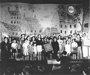

Vlasta Burian

Jiřina Štěpničková a Jaroslav Vojta ve filmové adaptaci Maryši
František Drtikol: Jaroslav Kvapil
|
DIVADLO A FILM
Již před vznikem samostatného Československa se těšily největší prestiži dvě pražské scény – Národní divadlo a Městské divadlo na Královských Vinohradech. Roku 1921 se zde vyměnili režiséři. K.H.Hilar nastoupil do Národního divadla a Jaroslav Kvapil na Vinohrady. Hilar vedl herce k expresivnímu výrazu, pro nějž byla typická přepjatá emotivnost, důraz na prudká gesta, vyjadřování vnitřního neklidu nebo obliba konfliktních situací. V Národním divadle vynikli herci Václav Vydra, Eduard Kohout, Jaroslav Vojta, Saša Rašilov, Rudolf Deyl, Růžena Nasková, Antonie Nedošínská nebo Jan Pivec. Kvapil uplatňoval klasičtější a lyričtější inscenační postupy. Spolupracoval s dramatikem Karlem Čapkem a scénografy Josefem Čapkem, Františkem Muzikou či Bedřichem Feuersteinem. Ve Vinohradském divadle působili herci František Smolík, František Kovářík, Zdeněk Štěpánek, Růžena Šlemrová, Olga Scheinpflugová, Hugo Haas, Jiřina Štěpničková nebo Leopolda Dostalová. Řada divadelníků se zároveň uplatnila ve filmu.
Vedle těchto kamenných divadel existovaly i menší scény, například literární a politické kabarety, loutková divadla, divadla pro děti, kočovné společnosti nebo ochotnická divadla.
Svébytnou podívanou představovaly slavnostní přehlídky nebo sokolské slety.

X. všesokolský slet v Praze roku 1938
|
Hudba
Významnými skladateli vážné hudby byli Leoš Janáček, Bohuslav Martinů, Josef Bohuslav Foerster, Vítězslav Novák nebo Josef Suk.

Leoš Janáček
Hrají ve vašem městě ochotníci? Navštěvuješ jejich představení? Proč?
Jaký je rozdíl mezi šantánem, kabaretem a varieté?
Co je literární kabaret?
Zopakuj si, co víš o avantgardních scénách (Osvobozené divadlo, Burianovo „Déčko"...).
Kteří avantgardní autoři psali divadelní hry?
|
Karel Čapek (1890-1938)
Čapkovy hry uvádělo Městské divadlo na Královských Vinohradech. Karel Čapek je autorem dramat Loupežník, R.U.R., Věc Makropulos, Bílá nemoc a Matka. S bratrem Josefem Čapkem napsal hry Ze života hmyzu, Lásky hra osudná a Adam Stvořitel. Manželka Karla Čapka Olga Scheinpflugová byla nejen herečkou, ale rovněž spisovatelkou. Úspěšná byla její hra Madla z cihelny.

Haas a Scheinpflugová
|
Karel Čapek: Bílá nemoc
V Čapkově dramatu Bílá nemoc svět zachvátí epidemie záhadné choroby, která se zprvu projevuje znecitlivěním části těla a končí smrtí nakaženého. Lék na tzv. bílou nemoc objevuje doktor Galén, který léčí výhradně chudé a svou metodu nechce nikomu prozradit, dokud nepřestanou všechny války. V zemi však vládne fašistický diktátor Maršál, který se chystá napadnout sousední stát. Maršál také onemocní bílou nemocí a nakonec na podmínky doktora Galéna přistupuje. Lékař se k němu ale nedostane, protože ho před diktátorovým palácem ušlape zfanatizovaný dav. S Galénovou smrtí mizí lék proti bílé nemoci. Vyléčen nebude ani Maršál, ani další nakažení lidé.
Hugo Haas natočil podle Čapkovy předlohy stejnojmenný film, ve kterém ztělesnil doktora Galéna. Závěr hry se Haas rozhodl změnit, aby vyznění nebylo tak beznadějné.
|

Čapek s Haasem během natáčení Bílé nemoci
Srovnej postavy doktora Galéna a dvorního rady.
Co si myslíš o Galénovi?
Porušil Galén Hippokratovu přísahu?
Jednal Galén neeticky, když upíral některým nemocným svůj lék?
Byl Galén ve svém boji úspěšný?
Jaké byly osudy herce Hugo Haase?
|
Karel Hašler (1879-1941)
Hašler se narodil na pražském Zlíchově a zemřel v koncentračním táboře Mauthausen. Začínal jako ochotník. Vystupoval v činohře, operetách i operách. Prošel řadou divadel (Národní divadlo, Vinohrady), kabaretů (Lucerna, Rokoko) a varieté. Jeho manželka Zdenka byla sestrou skladatele Rudolfa Frimla. Hašler psal krátké skeče, kabaretní výstupy i celovečerní představení, revue a operety. Velmi populární byly jeho sentimentální idylické písně s milostnou a vlasteneckou tematikou. Skládal i kuplety a satirické popěvky. Spolupracoval na filmech Písničkář, Srdce za písničku, Záhada modrého pokoje, Král ulice, Jánošík, Hordubalové, Babička, Pantáta Bezoušek, Roztomilý člověk nebo Městečko na dlani. V několika filmech si také zahrál.
|
Kabarety
Zlatá doba kabaretu přišla těsně po skončení 1. světové války. V Praze si získal popularitu kabaret Lucerna, ve kterém působil Karel Hašler jako autor i interpret vlastních komických výstupů a písní. Červená sedma (1918-1922) byla spíše literárním kabaretem. Řídil ji písničkář Jiří Červený, který spolupracoval s Eduardem Bassem. Touto scénou prošli komikové Vlasta Burian, Ferenc Futurista nebo Jindřich Plachta. Vystoupil zde též Jaroslav Hašek. V Rokoku působil Vlasta Burian, Ferenc Futurista nebo Jára Kohout. Uváděla se zde Kischova hra Nanebevstoupení Tonky Šibenice, Longenovy hry nebo Hašlerovy revue.
Řada komiků si později založila vlastní divadla, například Vlasta Burian, Jára Kohout nebo Oldřich Nový. Publikum navštěvovalo představení hlavně kvůli jejich hereckým výkonům, ostatní herci byli spíše druhořadí přihrávači. Nejúspěšnější komedie často získaly také filmovou podobu.
|

Karel Hašler ve filmu Písničkář
Najdi v Hašlerových písničkách vlastenecké a milostné motivy
Které další Hašlerovy písně znáš? Umíš je zazpívat?
Líbí se ti Hašlerovy písně? Proč?
Co má společného Karel Hašler s bonbony Hašlerkami?
|
Josef Skupa (1892-1957)
Skupa pocházel ze Strakonic a zemřel v Praze. Působil jako loutkoherec v plzeňském Loutkovém divadle Feriálních osad. Roku 1920 vytvořil řezbář Karel Nosek podle Skupova návrhu figurku Spejbla, o 6 let později k ní přibyl Hurvínek. Roku 1930 založil profesionální Plzeňské loutkové divadlo prof. Josefa Skupy, se kterým objížděl Čechy. Původní komickou dvojici ještě doplnily loutky holčičky Máničky a psa Žeryka.
|
Skupův Spejbl a Hurvínek
Skupovy výstupy s loutkami Spejbla a Hurvínka nebyly původně určeny dětským divákům, ale postupně začal psát představení pro dospělé i děti. Pro jednotlivé scénky jsou typické slovní hříčky a jazyková komika. Šlo vlastně o konverzační hry založené na rozdílu dvou různých generací. Brzy se ustálily povahové rysy obou postav – Spejbl jako pohodlný, nerudný, nevzdělaný, konzervativní, autoritářský a diletantský tatík, Hurvínek jako jeho raubířský a vzdorovitý synek.
|
Spejbl a Hurvínek
Srovnej text ukázky se scénkami Spejbla a Hurvínka, které znáš odjinud.
Líbí se ti Skupův humor? Proč? Na čem je založen?
Kdo se ujal loutek Spejbla a Hurvínka po Skupovi?
Sehrajte loutkové představení.
|
Židovské ghetto Terezín
Koncentrační tábor Terezín, kde čekali Židé v nelidských podmínkách na transport do vyhlazovacích táborů, opakovaně navštívili pracovníci Mezinárodního červeného kříže. Nacisté pro ně zinscenovali dokonalé představení, takže inspektoři vůbec nezjistili, jaký je skutečný účel tohoto tábora! Jeho část byla ukázkově „zkrášlena“. Ulice dostaly názvy, byly vytištěny speciální peníze, zřízeny obchody a restaurace, podporovala se kultura a sport, byly opraveny fasády domů, vystěhovány vybrané budovy atd. Ve skutečnosti nacisté internovali do Terezína postupně 155 000 lidí. 35 000 z nich zemřelo přímo v ghettu, dalších 83 000 Židů zahynulo po deportaci ve vyhlazovacích táborech. V původně sedmitisícovém městě bydlelo najednou až 58 000 lidí a postupně jím prošli skoro všichni Židé žijící na území Čech a Moravy. Až při osvobozování se ukázalo, jak hrůzné bylo tzv. „konečné řešení židovské otázky“ a co obnášelo!

Záběr z nacistického propagandistického filmu natočeného v Terezíně
|
Divadlo v době okupace
První omezení pro umělce přišla záhy po Mnichovu. Zákaz postihl protifašistické hry, dramata demokraticky a levicově smýšlejících autorů nebo překlady her německých emigrantů (Brechta, Zweiga...). Zavřeno bylo Osvobozené divadlo. V době Protektorátu Čechy a Morava dopadla na divadelnictví (stejně jako na jiné umělecké obory) přísná cenzura. Bylo zatčeno na 150 herců, režisérů a dalších divadelníků. Postupně bylo zakázáno uvádění her Karla Čapka, autorů „židovského původu“ (Langer, Poláček...), Smetanových oper nebo překladů her dramatiků národů, které byly s Německem ve válečném stavu (s výjimkou Shakespeara a Molièra). Uvádět se nesměla Fidlovačka, Lucerna a řada vlasteneckých nebo historických her. Časté byly škrty v textech. Otevřený aplaus chápali nacisté jako provokaci. Herci, autoři i režiséři většinou zvolili pasivní rezistenci a uchýlili se k jinotajům, vícevýznamovému podtextu a bezproblémovým tématům. 1. září 1944 nacisté zavřeli všechny české divadelní scény, aby mohli být jejich zaměstnanci nasazeni na práce pro říši.
Bedřich Fritta: Film a skutečnost (Terezín)
|
Bedřich Fritta: Ubikace starých v Kavalíru (Terezín)

Ungar: Divadlo na dvoře (Terezín)
Která divadla byla během okupace zavřena?
Kteří divadelníci prošli vězením nebo koncentračním táborem?
Co si myslíš o protektorátní cenzuře?
Bankovka vytištěná pro terezínské ghetto v rámci propagandistické akce „zkrášlení“.
|
Film

Lída Baarová ve Vávrově filmu Dívka v modrém

Ferenc Futurista
|
Film
Nejstarší české filmy natáčel na konci 19. století Jan Kříženecký. Vystupoval v nich komik Josef Šváb Malostranský. Roku 1907 zřídil Viktor Ponrepo v Praze první stálý biograf. Nejvýznamnější filmovou společností se stal Lucernafilm Václava Havla, který vybudoval filmové ateliéry na pražském Barrandově. V éře němého filmu vznikly např. snímky Pohádka máje, Tonka Šibenice, Kreutzerova sonáta, Erotikon, Dobrý voják Švejk nebo Babička. První český zvukový film pochází z roku 1930. K nejvýznamnějším meziválečným režisérům patřili Martin Frič, Karel Lamač, Gustav Machatý, Vladimír Slavínský, Otakar Vávra, Miroslav Cikán nebo František Čáp. Filmové studio vzniklo také při Baťových závodech ve Zlíně.
Oldřich Nový a Adina Mandlová ve filmu Kristián
V Protektorátu Čechy a Morava natáčeli nacisté kreslené propagandistické filmy pro děti, např. Svatbu v korálovém moři, které měly nahradit animované snímky Walta Disneye.
Další autoři a jejich díla
František Langer: Velbloud uchem jehly, Periferie
Egon Ervin Kisch: Nanebevstoupení Tonky Šibenice
|
Které filmy natočili uvedení režiséři?
Díváš se na filmy pro pamětníky? Proč?
Které meziválečné komedie znáš? Jak se ti líbí?
Které české herce a herečky z filmů natočených do roku 1945 znáš?
Jaký byl osud herců z protektorátních komedií po 2. světové válce?
Vyhledej a přečti si knihu o vybraném herci a napiš o ní stručný referát.
Která díla meziválečných autorů byla zfilmována do roku 1945?
Záběr z Machatého filmu Extase
|
Internetové stránky
Planetka Spejbla a Hurvínka
Hašler, fotogalerie
Hašler, písně
Písničkář, občanské sdružení
Šlapeto, hudební skupina
Česká obec sokolská
Sokol
Ghetto Terezín
Filmy pro pamětníky
Martin Frič, režisér
Čeští herci, fotografie s podpisy
Kašpar: Lída Baarová, článek
Halada: Český filmový plakát, článek
Exkurze
Divadlo na Vinohradech, Praha
Divadlo Spejbla a Hurvínka, Praha
Ponrepo, Praha

František Drtikol: Tanečnice
|
Doporučená četba
Bartošek, Luboš: Náš film, Kapitoly z dějin (1896-1945), Mladá fronta, Praha 1985
Bass, Eduard: To Arbes nenapsal, Vrchlický nebásnil..., Praha 1958
Branald, Adolf: My od filmu, Mladá fronta, Praha 1988
Čapek, Karel: Dramata, ČSS, Praha 1992
Čapkové, K. a J.: Filmová libreta, Odeon, Praha 1989
Červený, Jiří: Červená sedma, Praha 1959
Deyl, Rudolf: Písničkář Karel Hašler, Praha 1968
Dějiny českého divadla IV, Academia, Praha 1983
Divadlo dřevěných hvězd, Merkur, Praha 1990
Doležal, Jiří: Česká kultura za protektorátu, Školství, písemnictví, kinematografie, Praha 1996
Grym, Pavel: Hovory u Spejblů, Západočeské nakladatelství, Plzeň 1990
Grym, P.: Klauni v dřevácích, Panorama, Praha 1988
Grym, P.: Spejbl a Hurvínek aneb Sólo pro Josefa Skupu, Impreso plus, Žďár nad Sázavou 1995
Javorin, Alfred: Pražské arény, Orbis, Praha 1958
Just, Vladimír: Věc: Vlasta Burian, Rozmluvy, Praha 1989
Kniha o kabaretu, Mladá fronta, Praha 1988
Král, A., Král, P.: Vlasta Burian, Orbis, Praha 1969
Langer, František: Hry (4 svazky)
Panorama českého filmu, Rubico, Olomouc 2000
Písně lidu pražského, Praha 1966
Skupa, Josef a spol.: Spejbl a kurtizána, Supraphon, Praha 1988
Smích Červené sedmy, ČSS, Praha 1981
Sokol, František: Svět loutkového divadla, Albatros, Praha 1987
Srba, Bořivoj: O nové divadlo, Nástup nových vývojových tendencí v českém divadelnictví v letech 1939-1945, Praha 1988
Šantán s červenou lucernou aneb Ať žije Baj-Kaj-Laj!, ČSS, Praha 1985
Šormová, E.: České divadlo v Terezíně 1941-1945, Ústí nad Labem 1973
Theater, Divadlo, Vzpomínky českých divadelníků na německou okupaci a druhou světovou válku, Praha 1965
Ze společné tvorby bratří Čapků, ČSS 1982
|
Vypracuj písemný referát o některé z uvedených knih.
Zjisti, o kterých českých hercích a herečkách vznikly samostatné publikace.
Záběr z Fričova filmu Jánošík
Karel Hugo Hilar
|
|